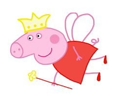

Munirah Novacoki Mezher
@munirahmezher
munirah.mezher@escola.pr.gov.br
Me chamo Munirah, tenho 15 anos e estudo no Colégio Wilson Joffre, em Cascavel-PR.
Falo em inglês e espanhol e sei tocar violão e piano.
Sou formada na modalidade de Ballet Clássico pelo centro de artes ABBA.
Sou apaixonada por todas as formas de arte. Gosto muito de ler, escutar música, pintar e dançar.